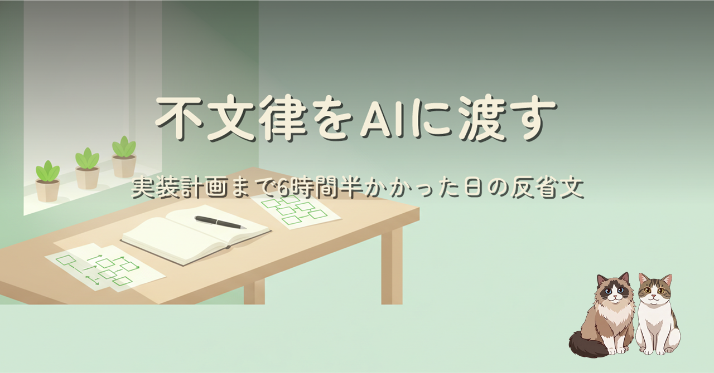

検証は 2 時間で終わったのに、設計議論だけで 3 時間空転した。原因は AI ではなく、用語の意味・値の責任・締め日不在という組織的前提が全部「不文律」のまま、渡す経路が無かったこと。却下した案を理由ごと記録するアンチパターン集と設計思想の正本化、そして文書を憲法・法律・条例の 3 段で持つ提案まで。
AI との設計議論が空転するとき、足りないのは AI の賢さではなく、開発者の頭の中にだけあるドメイン知識であることが多い、という失敗談です。「どの値を突き合わせても区別できない 2 つのケース」を分けた 1 枚の表を転機に、迷走の正体が用語のズレと組織的前提の共有漏れだったと突き止めるまでの記録と、その再発防止として「設計思想の正本」「却下理由ごとのアンチパターン集」「毎セッション読み込む配線」を整備した話。結論として、開発文書を国の法体系（憲法・法律・条例）の 3 段で構成する型を提案し、ケルゼンの法段階説・DDD のユビキタス言語・ADR との接続まで掘っています。